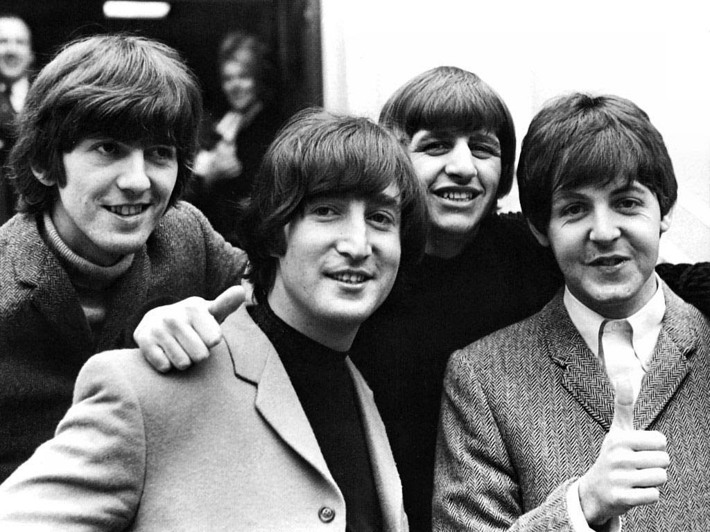

Роки в The Beatles

На початку 1960 неофіційним менеджером «Бітлз» став Еллен Вільямс, власник бару «Джакаранда», у якому гурт репетирував.
Він шукав ангажементів для музикантів на концертні виступи.Спочатку гурт разом з іншими ліверпульськими музикантами, включно зі співаком Джонні Джентлом, відправився в турне по Північній Шотландії.
16 серпня 1960 Пол разом із Ленноном, Гаррісоном, Саткліффом і Бестом залишив Англію, а 17-го вже вийшов на сцену нового гамбурзького клубу «Індра», нещодавно відкритого Кошмідером.
Відрепетированих композицій часто не вистачало, і музиканти часом без підготовки виконували нові пісні, на ходу підбираючи акорди й експромтом придумуючи тексти.<Місяці у Гамбурзі стали для них гарною школою, де вони отримали досвід концертних виступів і розвили виконавську майстерність.
До 1961 року Пол, як і Джон, був ритм-гітаристом, а бас-гітару брав у руки лише коли Саткліфф через приступи головного болю не міг вийти на сцену.
Постійним бас-гітаристом він став улітку 1961-го, коли Саткліфф залишив гурт.5 жовтня 1962 був випущений дебютний сингл гурту з піснєю «Love Me Do», у якій рядок приспіву проспівав Маккартні.
У наступні три роки «Бітлз» видали численні сингли й альбоми, що мали велічезний успіх.12 червня 1965 «Бітлз» були вдостоєні ордена Британської імперії 3-го ступеня «за заслуги перед батьківщиною».
Вони одержали свої нагороди від королеви Єлизавети Другої на церемонії в Букінгемському палаці 26 жовтня 1965.